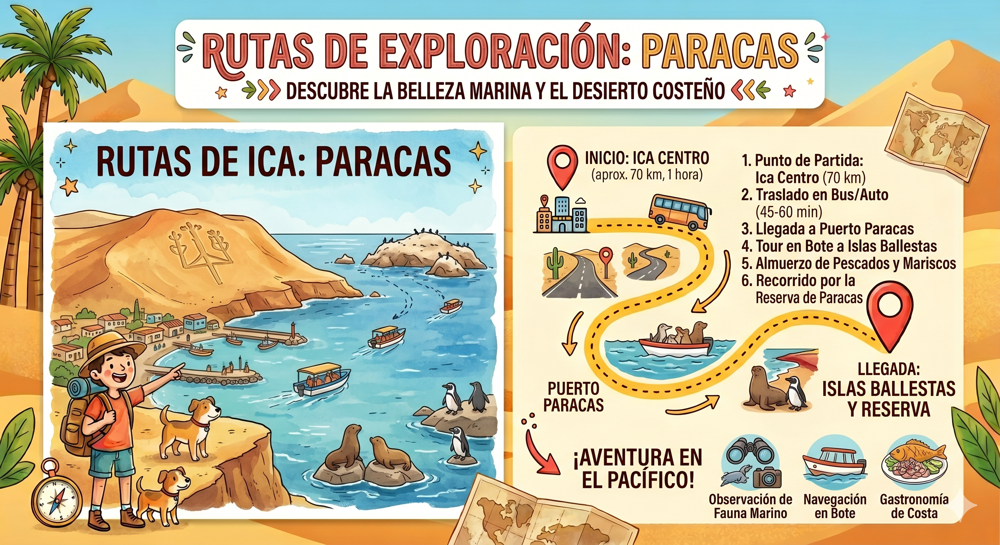

Tour Islas Ballestas (Turno Mañana)
Disfruta de la fauna marina en su hábitat natural. Te recomendamos llevar casaca cortavientos (por la brisa del mar), bloqueador solar y gorra.
-
07:45 AM
Punto de Encuentro
Nos reuniremos en la Marina Turística de Paracas (El Chaco). Nuestro guía te ayudará con el pago de la tasa portuaria y el chaleco salvavidas obligatorio.
-
08:00 AM
Embarque y Zarpe
Subiremos a nuestros modernos deslizadores para adentrarnos en las aguas del Océano Pacífico, sintiendo la fresca brisa marina.
-
08:30 AM
El Geoglifo del Candelabro
Haremos una pausa frente a la península de Paracas para observar el misterioso "Candelabro", un geoglifo gigante trazado en la arena.
-
09:00 AM
Las Islas Ballestas
Llegaremos al archipiélago rocoso para observar de cerca a cientos de lobos marinos, pingüinos de Humboldt y aves guaneras en su estado natural.
-
10:00 AM
Retorno al Boulevard
Regresaremos al puerto. Tendrás tiempo libre para pasear por el boulevard, comprar artesanías o disfrutar de la gastronomía local frente al mar.
Vista de la Ruta Marítima
